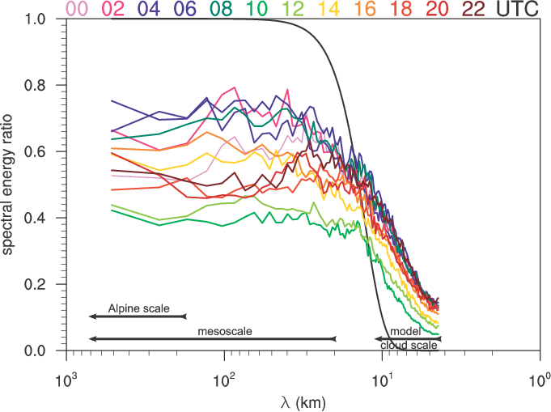

The diurnal cycle (colors) of the ratio of spectral energy densities between simulations with and without explicit diffusion is shown. Time is in UTC and local time (CEST) is UTC+2 hours. Mean spectra are computed for vertical velocity at 4 km MSL. The discretized response function of the 4th-order filter using a hyperviscosity a=3.8 10-3 is indicated by the black solid line for n=120 large time steps (=1 h). The mesoscale damping is strongly daytime dependent and peaks around 10 to 12 UTC. Clearly, it is not a direct consequence of the very scale-selective explicit filtering. However, the mesoscale energy is tied to small-scale convection near the grid scale. This is consistent with the idea of many small-scale plumes merging into a mesoscale ascending region.
In convection-permitting simulations, the spectrum of resolved motions is truncated near scales where convection is active. An ‘‘energy gap’’ between resolved and unresolved motions does not exist, such that the upscale and downscale fluxes of energy across the spectrum are affected by the representation of turbulence as well as (implicit and explicit) numerical diffusion. In this paper, a systematic analysis is undertaken of the role of explicit numerical diffusion on both grid scale and mesoscale.
Why do we care?
Convection-permitting simulations under-resolve the energy-containing scales of deep convection and, as a consequence, variance near the grid scale is not only diminished by subgrid turbulent diffusion but also by explicit and implicit numerical diffusion. Grid-scale perturbations of numerical origin can grow in unstably stratified environments especially during low-wind situations. A commonly applied remedy is explicit diffusion which acts as a low-pass filter. In this paper, its impact on the mesoscale is studied and different versions of explicit diffusion are compared numerically and theoretically.
How do we approach this?
Convection-permitting simulations (dx=2.2 km) of a fair-weather summer period with diurnal deep convection over the European Alps are conducted using the mesoscale model COSMO. During this period, deep convection is tighly coupled to the PBL dynamics and thus to the surface forcing. A large set of simulations with different hyperviscosities and different target variables is carried out to investigate the influence of the 4th-order diffusion operator implemented in COSMO. To estimate the origin and source of energy at the grid scale, simulations with more rigorously filtered orography and monotonic advection (instead of positive definite) are also evaluated. The impact on the mesoscale is quantified using spectral analysis of vertical velocity fields. Linear stability theory is used to better understand the response of convection to explicit diffusion of individual prognostic variables.
What do we find?
In line with previous studies, explicit diffusion is found to affect the grid scale energy and thus cloud macroscopic properties and surface precipitation. On top of that, a reduction of mesoscale dynamical activity over the mountain range ("alpine pumping") manifests an upscale influence of explicit diffusion. The widespread triggering of orographic convection over the mountain range is found to establish mountain-scale vertical motions. The bulk latent heating by convection in the upper troposphere is reduced by up to 30% with explicit diffusion with a similar reduction in rainfall.
The mesoscale signal is tighly coupled to the grid scale energy supply. The growth of perturbations at the grid scale is controlled particularly by explicit diffusion of horizontal momentum and buoyancy close to the surface, while diffusion applied to vertical velocity has little impact; this is in line with an increase of characteristic growth times of thermal instabilities, which have been determined using linear stability theory.
In our simulations weak explicit diffusion applied to velocities resulted in a removal of grid-scale energy such that the mesoscale impact was just as large as expected from improved (i.e., noise reducing) formulations of advection. Stronger diffusion (or additional diffusion of buoyancy) decreased the convective growth and precipitation significantly and revealed a nonphysically large mesoscale damping. If diffusion is too strong, the mesoscale dampening is found to be even larger than the mesoscale uptake of energy that originates from topographic flows at the grid scale.
{kind=link}